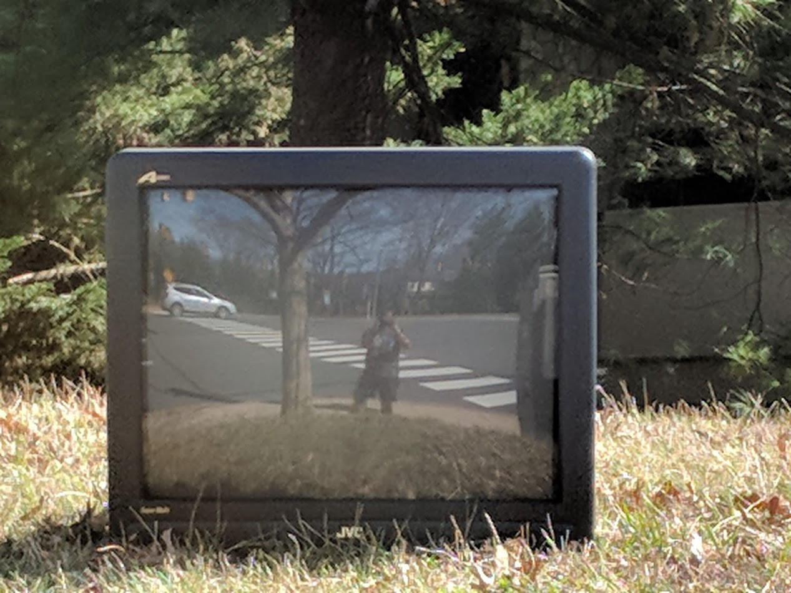

Eddie makes website
Navigation
about
books
misc
xonshiousness

Posts
Side project idea: WSPRry Pi Transmission Analysis with Espotek Labrador
—
Sun 08 March 2020
Introducing My 5-year Old to Computers Using a Raspberry Pi
—
Mon 18 November 2019